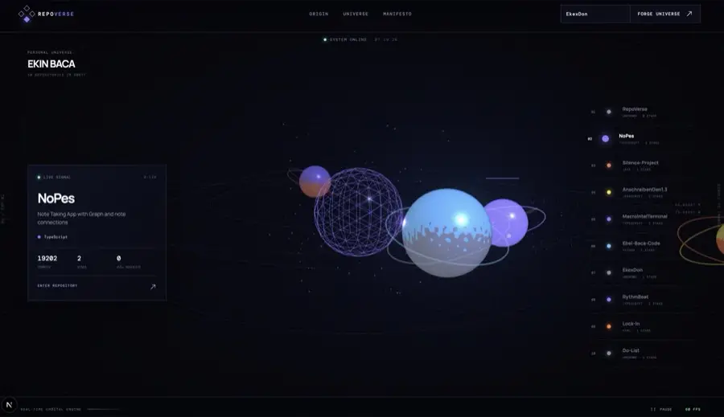
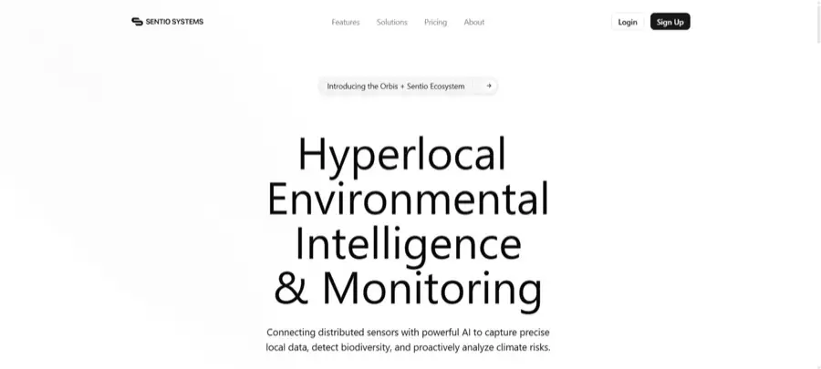
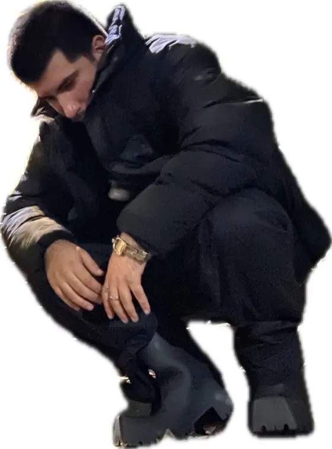

2026 · Tauri 2 · Rust · React
AETHER-OS
Lokales Betriebssystem für den Alltag: Notizen, Code, Terminal, Aufgaben, Kalender und ein KI-Agent in einer App. 237 IPC-Befehle, verschlüsselte Sicherung, keine Telemetrie.
Projekt ansehen ↗Ich baue lokale KI-Assistenten, Automatisierungen und eigene Tools für Kanzleien, Büros und kleine Betriebe in Stuttgart. Ihre Daten bleiben auf Ihren Rechnern.
Fragen an die eigenen PDFs, Verträge und Notizen stellen. Antworten kommen mit Quellenangabe. Das Modell läuft lokal, die Unterlagen verlassen das Haus nicht.
RAG · Ollama · PythonBerichte, Dokumente und Abgleiche, die heute von Hand laufen, werden zu einem Ablauf. Aus einer Mail wird eine Aufgabe, aus einer Tabelle ein Bericht.
Python · APIs · WebhooksEine Weboberfläche oder Desktop-App für genau Ihren Ablauf, statt einer Software, die nur halb passt. Inklusive Übergabe des Quellcodes.
React · FastAPI · TauriLokales Betriebssystem für den Alltag: Notizen, Code, Terminal, Aufgaben, Kalender und ein KI-Agent in einer App. 237 IPC-Befehle, verschlüsselte Sicherung, keine Telemetrie.
Projekt ansehen ↗Ein ruhiges Fenster für Mail, Kalender, Aufgaben, Dokumente und PDFs. Über einen MCP-Server kann Claude darin suchen und Einträge anlegen, mit Rückgängig und ohne Löschrechte.
Projekt ansehen ↗Jedes GitHub-Profil als begehbare 3D-Galaxie. Daten aus der GitHub-API, gerendert in Echtzeit im Browser.
Projekt ansehen ↗
Cloud-Plattform für lokale Umweltmessung. Als Backend-Lead: Microservices, Sensoranbindung per MQTT, Keycloak, Tests mit Testcontainers.
Projekt ansehen ↗

Ich studiere Medieninformatik an der Hochschule der Medien Stuttgart. Sechs Monate habe ich bei der Lechler GmbH in Data Science und KI-Automatisierung gearbeitet. Daneben habe ich mehrere eigene Apps gebaut und veröffentlicht.
Ich entwickle mit KI-Unterstützung und prüfe jede Lieferung mit automatisierten Tests. So bekommen Sie schnell ein Ergebnis, das trotzdem nachvollziehbar dokumentiert ist.
Nein, wenn Sie das so wollen. Das Sprachmodell und die Suche laufen auf einem Rechner bei Ihnen. Es gibt keine Verbindung zu einem Cloud-Dienst, außer Sie wünschen ausdrücklich eine.
Nach dem kostenlosen Erstgespräch bekommen Sie einen Festpreis für einen klar beschriebenen Umfang. Kleine Automatisierungen sind deutlich günstiger als ein Assistent für viele Nutzer. Es gibt keine versteckten Stunden.
Für kleine Modelle reicht oft ein aktueller Büro-PC oder Mac. Für größere Dokumentenmengen und mehrere Nutzer empfehle ich einen eigenen Rechner. Das klären wir im Gespräch, bevor Sie etwas kaufen.
Sie bekommen den Quellcode, eine Dokumentation und eine Einweisung. Auf Wunsch übernehme ich Updates und Wartung zu einem festen Monatsbetrag.
Sie sprechen direkt mit der Person, die baut. Das ist schneller und günstiger. Meine Arbeit können Sie vorher ansehen: Alle Projekte oben sind veröffentlicht oder auf GitHub.
Kopieren und an die Adresse links schicken.